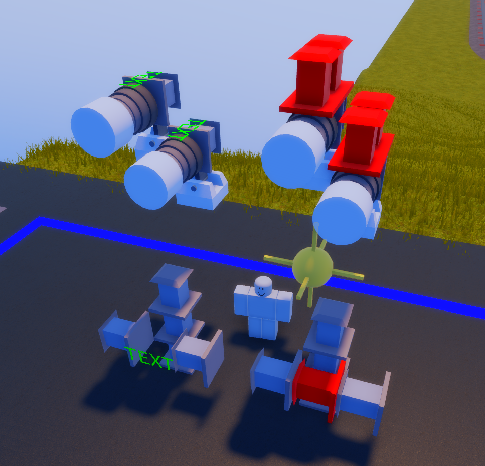

Blocks
These are all of the blocks that can be used for skeletonisation, they must all be set to collisions off and transparency on.
Compressors
Compressors are invincible to cutters and weapons when non collide and transparent, and breakable to weapons when collision is on. These allow you to push and pull segments of a build. Before they were invincible, complex angle locking was needed in place of compression.
Angle Locks
Angle blocks are only able to be invincible when transparent and non collide. They create invincible welds that can be angled, which gives it a few functionalities.
Using 90° turns, you can fold blocks into the position next to itself. This can be repeated indefinitely and is useful for easily compressing many blocks into one area of space without much effort or block usage.
By placing 4 angle locks set to 90° ontop of each other, you can make a 360° rotation that spans across four angle blocks, placing whatevers connected to the top at the bottom of the stack. It's recommended to flip the last angle blocks by 180°, this increases the amount of weld points at the top.
There are a few other ways to use angle lock towers, shown in the images.


Text
Text blocks are useful for specific welds, where regular blocks cannot fit because they might weld to other blocks. It comes in shapes of 1x2, 1x3, 2x2 and 3x3.

(3x3 texts do not weld at the top right and bottom left.)
Small Part/Cylinder
These are a great tool for welding between blocks, they must be made non collide to not break and don't have a visibility option. Their use cases are mostly similar to text, but you will rarely need them.
They can also be used to make invincible details on your shredder.
Zippering
Zippering is a connecting method using a bug with the moving system, the moving system lets the rotating part of angle locks to weld whatever it touches even after being moved until next reload.
It can be preformed by having a angle lock at the first block and then zippering them down until the final block that should have a connection with your build.